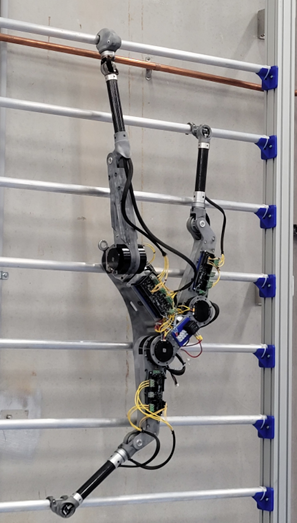

Tripedal Climbing Robot
Project Goal
This project focuses on state estimation and control of a custom-designed tripedal climbing robot. The robot is capable of traversing complex vertical surfaces using coordinated limb motions. The system integrates advanced state estimation techniques, including an Extended Kalman Filter (EKF), to maintain real-time balance and body awareness in dynamic environments.
Demonstration
The video and image below showcase the robot's climbing behavior in simulation, including trajectory tracking, body orientation control, and foot placement strategies. The robot maintains stability while adapting to surface curvature and disturbances through real-time state feedback.
Methods
- ✓ Implemented an Extended Kalman Filter (EKF) for real-time state estimation, including body position, velocity, and orientation
- ✓ Developed a custom dynamics and kinematics model tailored for tripedal locomotion
- ✓ Simulated and visualized robot behavior using MATLAB and PyDrake to validate control strategies